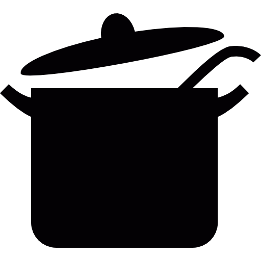
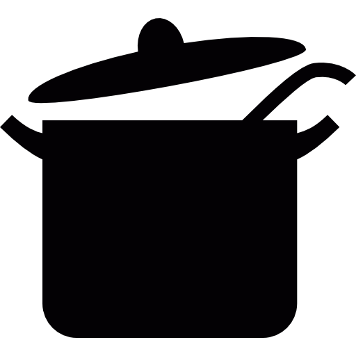

La pasta es uno de los pilares básicos en la alimentación de un deportista. Gracias a su alto valor nutricional aporta muchos carbohidratos de bajo índice glucémico. Ideal para realizar un esfuerzo prolongado y no quedarse sin energía.
Receta de Arroz negro
Dificultad: baja Cocina: tradicional Vegetariana: sí Celíacos: no Anticáncer: no
 

Autor: IVANRUGARCIA
Receta de Base de pizza
Dificultad: media Cocina: tradicional Vegetariana: no Celíacos: no Anticáncer: no
Autor: Selena
Receta de Canelones caseros
Dificultad: media Cocina: tradicional Vegetariana: no Celíacos: no Anticáncer: no
Autor: Peter
Receta de Arroz negro
Dificultad: baja Cocina: tradicional Vegetariana: no Celíacos: no Anticáncer: no
Autor: IVANRUGARCIA
Lentejas con chorizo
Dificultad: media Cocina: tradicional Vegetariana: no Celíacos: no Anticáncer: no
Autor: Peter
Receta de macarrones con carne
Dificultad: baja Cocina: tradicional Vegetariana: no Celíacos: no Anticáncer: no
Autor: Peter
Receta de salsa carbonara
Dificultad: baja Cocina: tradicional Vegetariana: no Celíacos: no Anticáncer: no
Autor: Maria
Receta de ensalada de pasta
Dificultad: baja Cocina: tradicional Vegetariana: sí Celíacos: no Anticáncer: sí
Autor: John
Receta de macarrones en tinta de calamar
Dificultad: baja Cocina: tradicional Vegetariana: no Celíacos: no Anticáncer: si
Autor: Trish
Receta de fideua
Dificultad: baja Cocina: tradicional Vegetariana: no Celíacos: sí Anticáncer: no
Autor: Marta
Receta de espaguetis con 4 quesos
Dificultad: media Cocina: tradicional Vegetariana: no Celíacos: no Anticáncer: sí
Autor: Johny
Receta de espaguetis blancos
Dificultad: baja Cocina: tradicional Vegetariana: sí Celíacos: sí Anticáncer: no
Autor: Marta
Receta de espaguetis con atún
Dificultad: baja Cocina: tradicional Vegetariana: no Celíacos: sí Anticáncer: no
Autor: Marta
Receta de espaguetis con tomate
Dificultad: baja Cocina: tradicional Vegetariana: sí Celíacos: sí Anticáncer: no
Autor: Marta
Receta de canelones de espinacas
Dificultad: baja Cocina: tradicional Vegetariana: sí Celíacos: sí Anticáncer: no
Autor: Marta